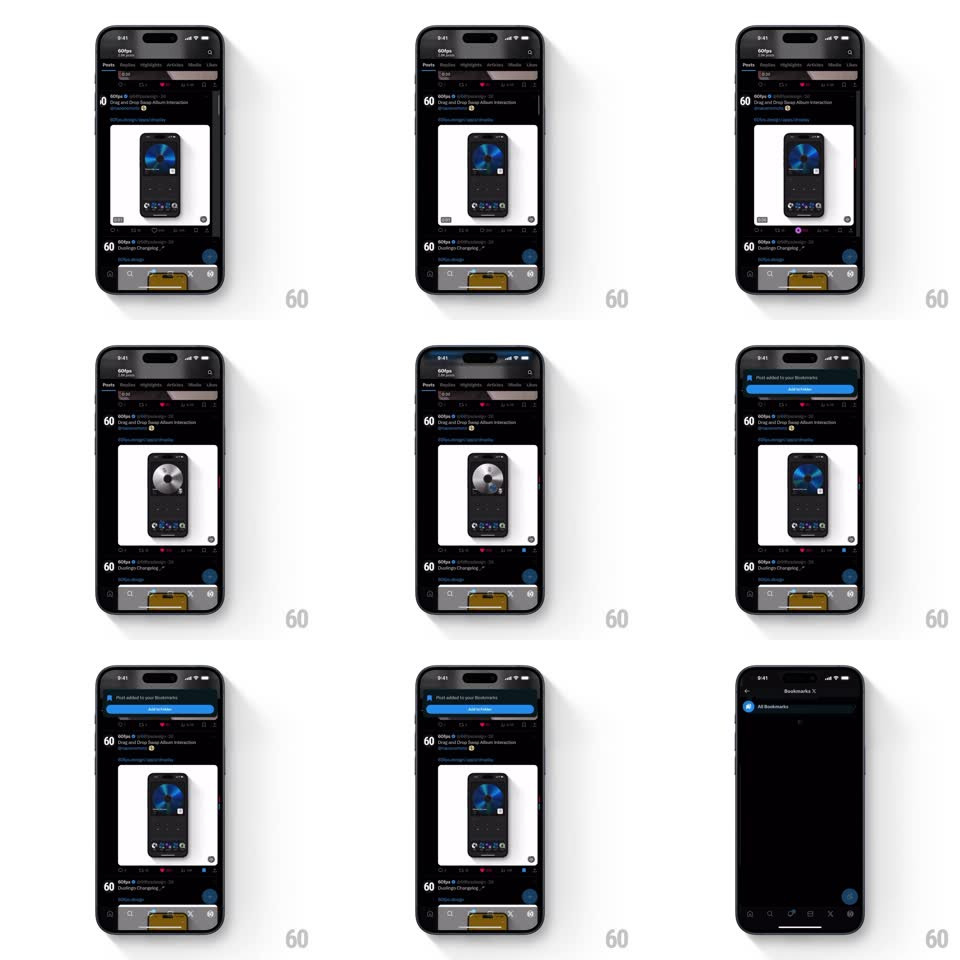

Media
Frame-by-frame

Rebuild this interaction 1:1: X's swipe-to-act on a post - dragging a tweet card left reveals quick actions that scale up as they're armed; releasing on the bookmark action confirms it and drops a "Post added to your Bookmarks" toast from the top.

Rebuild this interaction 1:1: X's swipe-to-act on a post - dragging a tweet card left reveals quick actions that scale up as they're armed; releasing on the bookmark action confirms it and drops a "Post added to your Bookmarks" toast from the top. ## Integration Integration: stack-agnostic spec - springs given as stiffness/damping, timed motions as duration + curve; map every value to your framework and animation library of choice. ## Scene The dark X feed (60fps posts with media cards). Swiping a post left uncovers action affordances in the revealed trailing gutter (bookmark, repost-style glyphs). The confirmation is a dark toast sliding down from the top: "Post added to your Bookmarks" with a blue "Add to Folder" button. ## Motion spec Pattern: swipe-reveal with armed-action scaling. - Drag left: the card tracks the finger 1:1; in the revealed gutter the action icons fade in and scale with progress (0.5 -> 1 at their arm thresholds, staggered outward from the card edge). - The icon under the current drag position scales larger (up to 1.25) and fills with its accent - it "arms" as the finger crosses it; its siblings scale back down. - Release on the armed bookmark icon: the card springs home (spring ~420/22, 280ms), the icon does a confirm pop, and the toast slides down from under the status bar (spring ~380/20, 350ms). - The toast holds ~2.5s, then slides back up; "Add to Folder" inside it is tappable while visible. - Release short: the card springs home and the icons fade away with it. ## Calibration - Arm thresholds are distance-based; the scaling IS the targeting UI. - Vertical scroll claims the touch outside a ~10deg horizontal cone. ## Reduced motion Icons fade in armed/unarmed states; toast appears without slide. ## Don't miss - The toast sits below the status bar with rounded corners - it overlays the feed, not pushes it. - The armed icon's accent fill is instant (no fade) so targeting feels crisp.